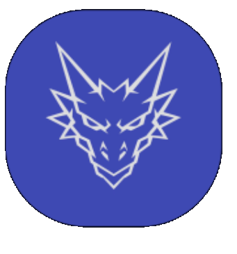

Where your people
actually want to hang out.
Wyvern is built for every kind of community. Chat, share moments, and stay connected in a space that feels alive from the first message.

Wyvern is built for every kind of community. Chat, share moments, and stay connected in a space that feels alive from the first message.
Create homes for your groups with channels for everything from quick check-ins to deep conversations.
Jump into private chats with friends and teammates whenever you want one-on-one time.
Post photos, clips, and files in chat so your conversations stay rich and expressive.
Bring your community to Wyvern and make every conversation feel like it belongs.